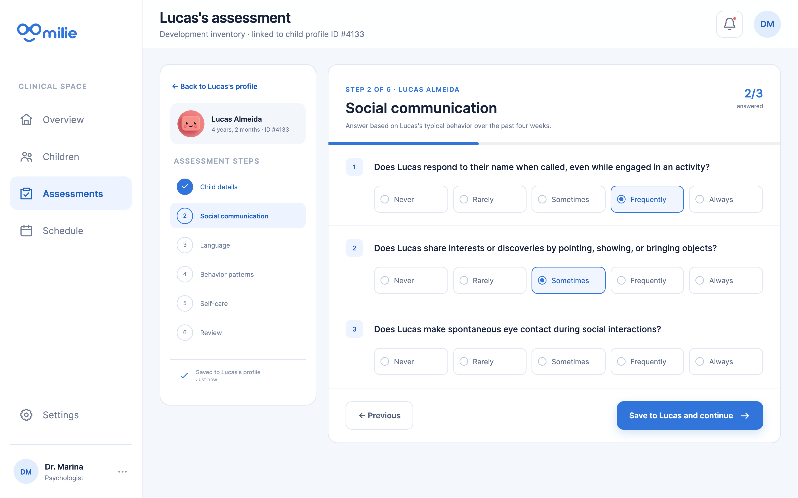
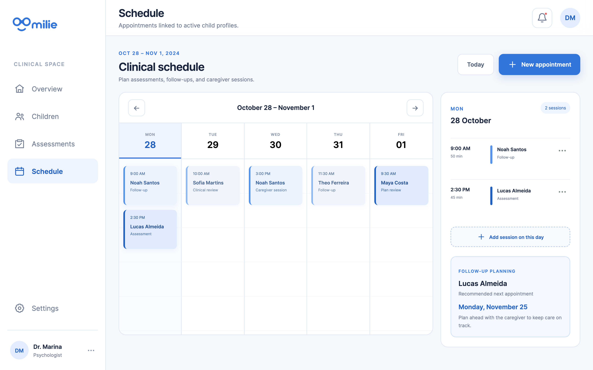

Start with the child.
Caregiver details, assessment history, and the next appointment sit alongside the profile, so the numbers stay connected to the person.
I worked with Millie, a startup developing products for developmental care, on a clinical workspace connecting child profiles, assessments, and follow-up. Millie continues to operate and evolve its products; this case presents the work from that collaboration.

The challenge
A single assessment only captures one moment. Following a child’s development means moving between their history, observations, assessment results, and upcoming appointments.
The work brings those tasks into a connected workspace: start with a child, complete an assessment in context, and return to an overview that makes patterns across domains visible.
Caregiver details, assessment history, and the next appointment sit alongside the profile, so the numbers stay connected to the person.
Assessments and appointments are linked to a child’s profile, creating clear paths between the main clinical tasks.
Trends and domain summaries offer different views of development, supporting a clinician’s interpretation of the results.
Assessment flow
The assessment keeps the child’s identity visible throughout the flow. A step navigation and completion indicator help orient the user within a longer task.
Questions use repeated response patterns, with selected answers clearly distinguished. Previous and continue actions sit together at the end of the section.

Care coordination
The schedule places assessments, follow-ups, and caregiver sessions in a weekly view. Selecting a day reveals its sessions in an adjacent agenda, while new appointments begin with an existing child profile.
The calendar recommends a date for the child’s next appointment, helping clinics plan follow-up proactively and keep care moving between visits.

An evolving product
My work for Millie connected the core workflows: browsing child profiles, reviewing development information, answering assessment questions, and exploring the schedule.
Millie remains active and continues to evolve its products. The screens shown here represent the work from our collaboration, rather than the full scope or current state of the startup’s offering.